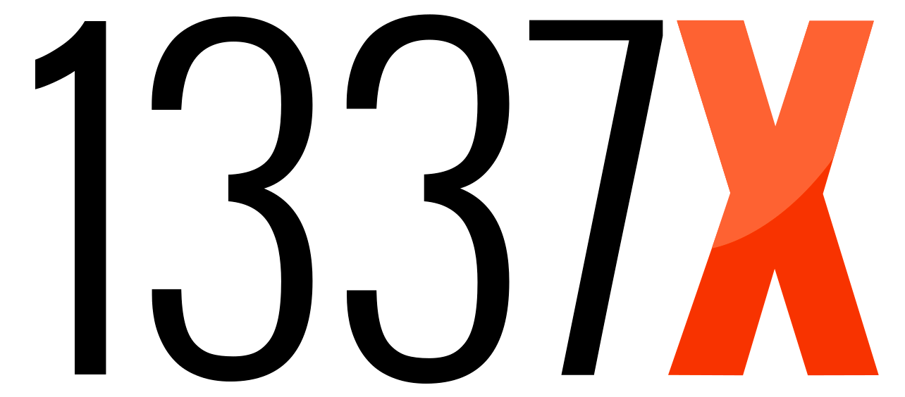

1337x
1337x is a website that provides a directory of torrent files and magnet links used for peer-to-peer file sharing through the BitTorrent protocol. According to the TorrentFreak news blog, 1337x is the third most popular torrent website as of 2021.
Content
1337x
- Rating: 9/10
- Year Founded: 2007
- Monthly Visitors: 71 million
- Download Speed: 4 MB/s
History
1337x was founded in 2007 and saw increasing popularity in 2016 after the closure of KickassTorrents. In October 2016, it introduced a website redesign with new functionalities. The site is banned from Google search queries and does not appear when searching through Google search. This action was taken following a request by Feelgood Entertainment in 2015. In 2015 the site moved from its older .pl domain to .to, partly in order to evade the block.
1337x's design can be compared to the now defunct "h33t". It has been touted as an alternative to The Pirate Bay in face of its potential demise.
Content
From there, the site is very easy to use. It offers up a pretty standard layout for a torrent website. Say, for instance, you typed, I don’t know, “free indie movies” into the search bar. What you’d get in response, on the following page, is every torrent file related to “free indie movies” that 1337x has to offer, from best seed:leech ratio to worst. Pretty typical stuff.
You can also browse torrents by what’s trending today, what’s trending this week, what’s popular today, what’s popular this week, and the top 100 torrents of the month (within a given genre), which makes finding new free indie music much easier than it is on some other free indie music torrent sites.
The thing that I do not like about this site, however, in terms of functionality is the fact that you cannot click a magnet link without clicking into the page of the torrent file. This just makes for necessary extra steps if you find the album that you are looking for, see that it is from a trusted source, and see that it has a decent seeder to leecher ratio.